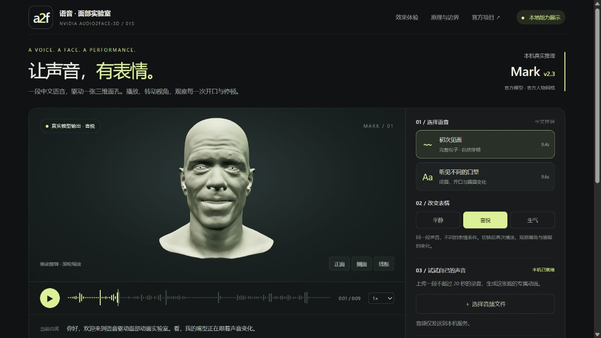

VIDEO RESULT
视频人物：身体动作保留，嘴型按声音重做
上方录屏中的实际链路：LTX-Video 生成动作 → Edge TTS 生成台湾女声 → 本地 MuseTalk 1.5 生成新嘴型 → 稳定与合成。后续本地工作台另接入了 MiniMax 对话、TTS 与 Hailuo 动作准备。
AUDIO2FACE / TALKING PORTRAIT · 015
3D 路线：音频驱动已适配的三维人物面部，再由渲染器显示口型与表情。
视频路线：照片先生成动作视频，再根据音频重绘口型，合成最终说话视频。
这是独立研究与工程集成项目。照片视频使用 MuseTalk，不是 Audio2Face 的照片生成功能。
01 / 实际网页演示
录制顺序：待机 → 原照片 → 原动作 → 欢迎、调皮、轻松回应 → 待机。画面来自本地 8020 页面实际回放；声音按播放器时间对齐原片音轨。人物为原创 AI 虚构成年角色。这里播放的是已生成结果，不代表实时生成或真人直播。
VIDEO RESULT
上方录屏中的实际链路：LTX-Video 生成动作 → Edge TTS 生成台湾女声 → 本地 MuseTalk 1.5 生成新嘴型 → 稳定与合成。后续本地工作台另接入了 MiniMax 对话、TTS 与 Hailuo 动作准备。
3D RESULT

本机 Audio2Face Mark v2.3 的真实输出，转换为三维面部顶点动画后由 Three.js 渲染。网页可以回放样例、旋转视角和查看线框；上传新录音需要本地服务。
交互查看三维面部动画 ↗02 / OVERALL ARCHITECTURE
本地 / 远端以本项目实际部署为准。
官方 Mark 或其他适配好的 3D 人物。照片不能直接代替角色资产。
本地资产ONNX Runtime 在本机推理，音频 → 逐帧面部动画系数。
把模型输出转换成角色能使用的运动数据。
显示人物口型与面部动作，可旋转、缩放。
身体动作需要另加骨骼动画。当前 3D 演示没有完整对话或自动照片建模。
Hailuo：当前自然半身；LTX-Video：录屏素材来源；LivePortrait：本地头部与表情替代方案。
定位、对齐、分割融合区域并缓存。属于我们为口型生成搭建的准备层。
Whisper 音频特征 ＋ 条件 U-Net / VAE，重绘与声音匹配的口型。
保留身体与背景，处理嘴部和句尾，再加入声音。
动作素材可复用，但循环、身份细节和表情切换仍有限制。
静态站点展示已有成果；本地模型、密钥和用户上传资源不随网页发布。
当前边界：尚未达到实时视频通话；身体动作不根据每句台词自由生成；嘴部细节与动作衔接仍可能不自然。公开 3D 演示仅含 Mark，不包含仅限本地评估的 Camila 资产或画面。